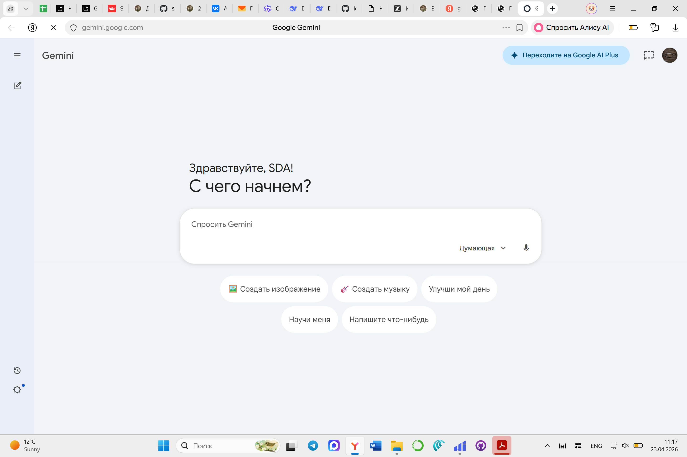

Ваше Преподобие, дорогой отец Иона!
Данный информационный портал создан как подробный протокол и методическое руководство по итогам нашей с Вами продолжительной и крайне продуктивной беседы. Мы детально обсуждали, как современные нейросети могут стать не просто «игрушкой», а настоящим виртуальным ассистентом профессора.
Вспомните наш первый эксперимент: мы пробовали на ходу создать сайт-ассистент в сервисе Z.ai. Я тогда написал запрос (промпт) на скорую руку. В результате ИИ выдал нам сервис, но опирался лишь на 1 страницу текста из 10. Тот мой промпт был откровенно посредственным, но главная суть была доказана — технология работает, и работает бесплатно! Вы можете освежить в памяти наш диалог по ссылке: Открыть сессию в Z.ai.
Мировая практика показывает: ИИ не может заменить преподавателя-богослова. Но он может взять на себя рутину. Главная проблема нейросетей — они склонны «галлюцинировать» (придумывать исторические факты). Чтобы этого избежать, критически важно давать им контекст через прикрепление файлов.
Материалы для загрузки
Для правильной работы с ИИ я подготовил два отдельных текстовых файла (.txt, их понимают все нейросети). Скачайте их перед началом работы.
Как правильно пользоваться ИИ: Пошаговая инструкция
Отец Иона, чтобы нейросеть выдавала неплохой академический результат, пожалуйста, следуйте этому алгоритму каждый раз при начале работы.
Откройте сервис и найдите «Скрепку»
Зайдите на сайт выбранной нейросети (ссылки ниже). Первым делом обратите внимание на строку, куда вводится текст. Рядом с ней находится значок (Скрепка) или (Плюс). Нажмите на него.
Прикрепите материал (Контекст)
Загрузите ваш файл .txt с текстом лекции. Загруженный файл становится «клеткой» для ИИ — он больше не будет искать ответы в интернете, а будет опираться только на ваши труды.
Напишите запрос (Промпт)
После прикрепления файла введите текстовое задание. Правильный промпт должен состоять из Роли, Задачи и Ограничений.
Каталог рекомендованных нейросетей

Сервис, с которого мы начали. Главный плюс: возможность бесплатно создать одноразовую веб-страницу или ИИ-агента под конкретную лекцию и раздать ссылку студентам (пример такого курса в самом низу страницы).

Важнейшая функция: возможность вручную отключить кнопку «Web Search» (Поиск в сети). Загрузив файл и отключив эту кнопку, вы полностью блокируете галлюцинации нейросети — она будет отвечать строго по вашему документу.

Не умеет создавать фото или видео, но является абсолютным лидером в анализе сложных текстов. Превосходно подходит для проверки студенческих эссе на логические и исторические ошибки.

Отечественная нейросеть от Сбера. Я особо рекомендую использовать её для создания фотографий и визуализаций. Отлично рисует исторические сцены, портреты для презентаций.

Специализированный инструмент от Google для ученых. Позволяет загрузить до 50 книг или статей. ИИ изучает только их и становится приватным экспертом. Можно дать ссылку студентам, и они будут получать ответы строго по загруженной вами литературе.

Профессиональная среда. Идеально генерирует код сайтов. Главная и уникальная функция: поддержка микрофона. Вы можете надиктовать голосом сложнейший промпт на несколько минут, и система поймет вас безупречно.

Gemini 🔴 VPN
Официальный чат-бот от Google. Неплох для написания структурированных учебных программ и креативных задач. Требует зарубежного аккаунта.

Grok 🔴 VPN
Нейросеть от Илона Маска (встроена в платформу X). Она также весьма неплоха в анализе данных и генерации изображений без цензуры, но доступна в основном по платной подписке (Premium) и требует VPN.
Пример: Сгенерированный ИИ-Курс (Z.ai)
Ниже встроен тот самый код курса, который написал ИИ по вашему тексту. Он абсолютно рабочий: интерактивные задания кликабельны, а встроенный чат в правой панели на самом деле анализирует ваши запросы на основе ключевых слов текста лекции.